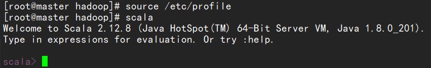

准备安装
首先在官网下载好scala以后，安装在hadoop目录下
cd /opt/hadoop
tar -zxvf scala-2.12.8.tgz
进入环境变量
vim /etc/profile
#scala
export SCALA_HOME=/opt/hadoop/scala-2.12.8
export PATH=$PATH:$SCALA_HOME/bin
source /etc/profile
保存
在相应的slave1，与slave2中也进行相应修改
安装成功

将scala分发到其他节点上
scp -r scala-2.12.8 root@slave1:/opt/hadoop/
scp -r scala-2.12.8 root@slave2:/opt/hadoop/